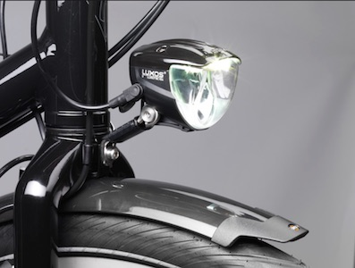
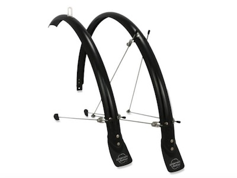
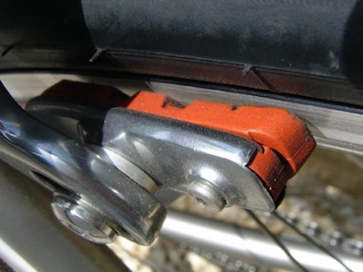
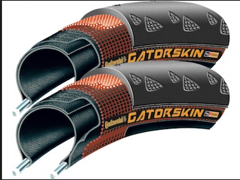
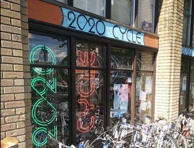
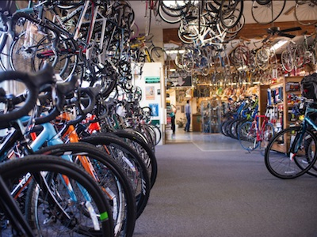
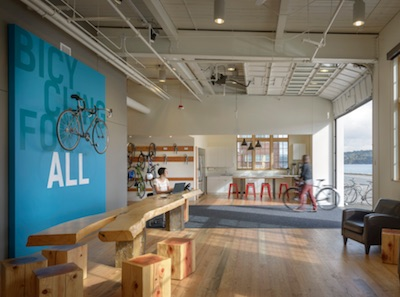
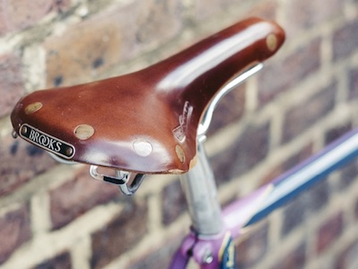
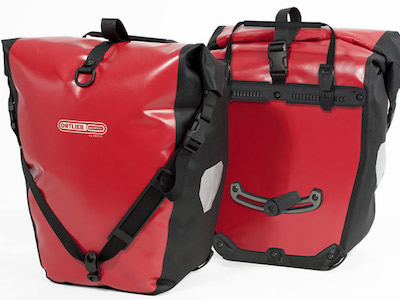
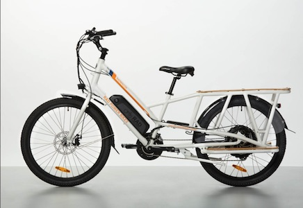

Dynamo Lighting
Busch and Muller
Never change a bike light battery again! These are human powered off of the Dynamo hub on your bike. These German made lights will stay bright when you break, and are highly visible on the road. I have a rear and front light.

Mud Guards / Flaps
Planet Bike
Keep that road grime off your back and your gear with these reliable mud guards and flaps.

Bicycle Brake Pads
Kool Stop
These all weather high performance pads mean you will brake better under wet conditions and sudden stops in the city.

Gator Skin Tires
Continental
Proper inflation of your tire tube, paired with these tough Gator Skin tires will mean less chance of flats. The multi-layers protects from glass and sharp punctures.

20/20 Cycle
2020 E Union St, Seattle, WA 98122
(206) 568-3090
A great shop in my neighborhood, they do great tune-ups and repairs on your current gear. They also sell cool retro bikes and spare parts. They are not stuck-up, and very friendly with your questions. They did an awesome job installing my dynamo lighting. Highly recommend them if you are in the area.

Recycled Cycles
1007 NE Boat St, Seattle, WA 98105
(206) 547-4491
Great shop near the U-district. They do good repairs and tune-ups. Nice place to rent a bicycle, or to get spare parts for a repair.

Cascade Cycle
7787 62nd Ave NE Seattle, WA 98115
(206) 522-3222
Go here for maintenance classes, and learning about bicycle advocacy

Bicycle Saddle
Brooks
A classic leather saddle that adjusts itself to your body as you ride.

Pannier
Ortlieb
Water resistant bags for the commute. Prevent damage, and dropped packages, easy on, easy off.

Cargo / Electric Bike
Rad Bike
Go car free. Bring your kid, dog or wife with you for the ride. Carry stuff, and an electric assist for the road! Rad Bike's of Seattle shown here.